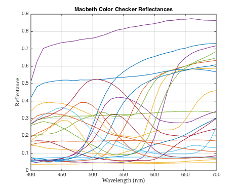
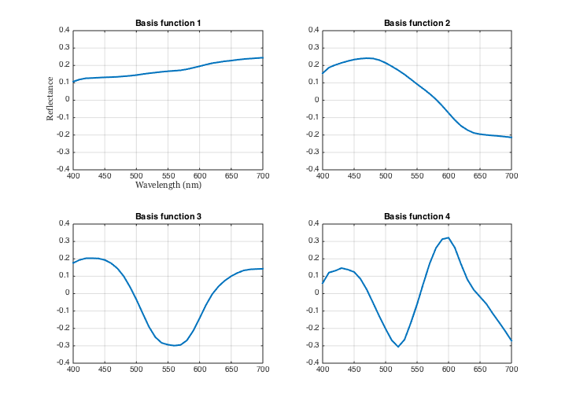
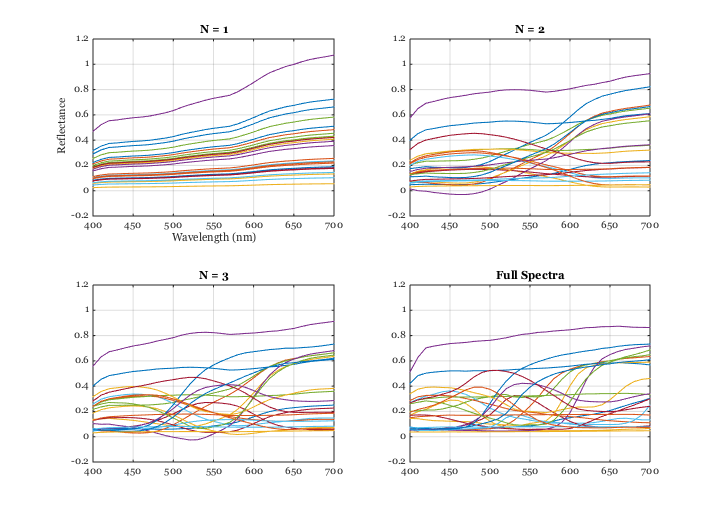
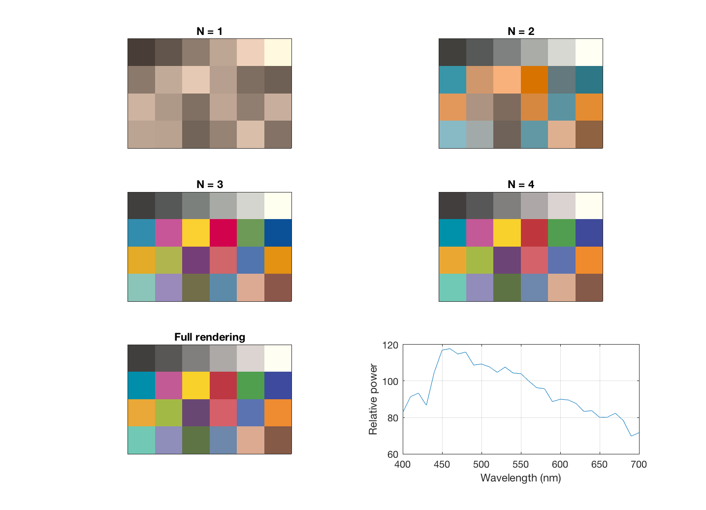

s_SurfaceModels
We create linear basis functions for the Gretag/Macbeth color checker surface reflectance functions. This script illustrates how to
(a) Read reflectances and create the basis functions (b) Approximate the original functions with lower dimensions (b) Render images of the approximation under a variety of lights
Copyright ImagEval Consultants, LLC, 2009.
Contents
Init
s_initISET;
The Gretag/Macbeth ColorChecker reflectance spectra
wave = 400:10:700; % nanometers macbethReflectance = macbethReadReflectance(wave); % Plot vcNewGraphWin; p = plot(wave,macbethReflectance); set(p,'linewidth',1); t = xlabel('Wavelength (nm)'); set(t,'fontname','Georgia') t = ylabel('Reflectance'); set(t,'fontname','Georgia') grid on title('Macbeth Color Checker Reflectances');
We can obtain an SVD linear model decomposition from the spectra
Build the linear model using the singular value decomposition
[U S V] = svd(macbethReflectance); % It is also reasonable to build models by first removing the mean. % mn = mean(macbethReflectance,2); % tmp = macbethReflectance - repmat(mn,[1,size(macbethReflectance,2)]); % [U S V] = svd(tmp); % U = [mn(:), U(:,1:3)]; % These basis functions are a lot like the simple SVD functions. % The columns of U are the basis functions It is nice to make them more % positive than negative, on balance. if sum(U(:,1)) < 0, U = -1*U; end % Plot the basis functions vcNewGraphWin; for ii=1:4 subplot(2,2,ii) p = plot(wave,U(:,ii)); set(p,'linewidth',2) grid on; ylim([-0.4 0.4]); title(sprintf('Basis function %d',ii)); end subplot(2,2,1) t = xlabel('Wavelength (nm)'); set(t,'fontname','Georgia') t = ylabel('Reflectance'); set(t,'fontname','Georgia')
These graphis illustrate different approximations
[U S V] = svd(macbethReflectance); W = S*V'; hdl = vcNewGraphWin; for nDims=1:3 subplot(2,2,nDims) list = 1:nDims; approxRef = U(:,list)*W(list,:); plot(wave,approxRef) set(gca,'fontName','Georgia') grid on set(gca,'ylim',[-0.2 1.2]) title(sprintf('N = %d',nDims)); end subplot(2,2,4) plot(wave,macbethReflectance); set(gca,'ylim',[-0.2 1.2]) grid on set(gca,'fontName','Georgia') title('Full Spectra'); subplot(2,2,1) t = xlabel('Wavelength (nm)'); set(t,'fontname','Georgia') t = ylabel('Reflectance'); set(t,'fontname','Georgia')
Load XYZ nad choose a light for the rendering experiments
XYZ = ieReadSpectra('XYZ',wave); lgt = ieReadSpectra('D65',wave); % Or try these lights instead % lgt = ieReadSpectra('tungsten',wave); % lgt = ieReadSpectra('FluorescentOffice',wave); % lgt = ieReadSpectra('Fluorescent2',wave); % lgt = ieReadSpectra('Fluorescent7',wave); % lgt = ieReadSpectra('Fluorescent11',wave);
Render the lower dimensional images for that light
[U S V] = svd(macbethReflectance); W = S*V'; vcNewGraphWin; for nDims= 1:4 %5:8 % list = 1:nDims; % Render for this light, nDims, and set peak Y to 100 mccXYZ = XYZ'*diag(lgt)*U(:,list)*W(list,:); mx = max(mccXYZ(2,:)); mccXYZ = 100*(mccXYZ/mx); % Pack it into an RGB format imRGB = xyz2srgb(XW2RGBFormat(mccXYZ',4,6)); imRGB = imageFlip(imRGB,'updown'); imRGB = imageFlip(imRGB,'leftright'); % Show subplot(3,2,nDims) imagesc(imRGB); axis image set(gca,'xtick',[],'ytick',[]) title(sprintf('N = %.0f',nDims)) end % Full rendering subplot(3,2,5) mccXYZ = XYZ'*diag(lgt)*U*W; mx = max(mccXYZ(2,:)); mccXYZ = 100*(mccXYZ/mx); imRGB = xyz2srgb(XW2RGBFormat(mccXYZ',4,6)); imRGB = imageFlip(imRGB,'updown'); imRGB = imageFlip(imRGB,'leftright'); imagesc(imRGB); axis image set(gca,'xtick',[],'ytick',[]) title(sprintf('Full rendering')) % Plot the light subplot(3,2,6) plot(wave,lgt); grid on xlabel('Wavelength (nm)'); ylabel('Relative power');
Warning: Clipping negative values in XYZ -0.025505